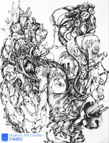

帮助学子人生全然更新 – 西西的故事
西西的母亲说，这个暑期，西西去了加州好莱坞电影制片大公司实习，对于一个刚刚结束罗得岛设计学院（RISD）二年级课程的学生来说，无疑是件超越年级的好事。
西西目前在全美艺术类排名第一的罗得岛设计学院主修电影设计专业。
家住纽约长岛的西西，十一年级的下学期，经人介绍到新泽西莎伦画院总校学习。
在此之前，她分別在中国大陆、美国学了十几年的绘画。大学想主修艺术，所以同时找了两个绘画老师，一位来自中国大陆，另一位号称专门帮助学生制作申请大学作品集的白人老师，还在美术学院里任教。
西西的母亲一直觉得女儿的绘画有问题，但不明就里，问了两位老师及很多画家朋友，都说不出所以然来。西西的母亲回忆说，一到莎伦画院，刘老师就一针见血：“没有基础，没有技巧，更谈不上任何创意！” 西西则回忆说，回程一路上，母亲一直说：“就是这一家了！” “而我有点难过，头一回被人说得这么差。但是，我知道这是真正为我好。” 西西的母亲则老问：“其他老师为什么看不出问题？”
从此，西西每个周末自己坐着长途火车从长岛辗转到新泽西上课。（当时莎伦法拉盛分校还没有设立）。从最基本的圆形开始学起，老师手把手地教导……西西当时才明白，以前所有的学习都是“乱来”。
初来乍到，西西时不时偷偷与朋友电话、简讯聊天，刘老师很平静地与她谈了一次， “从此以后，我再也不敢了！” 西西回忆说。
除了平日努力之外，西西整个夏天都住在新泽西，再参加莎伦暑期加强班。
有一次老师把SAT成绩够格申请RISD的学生叫到会议室开会。没有叫到西西。“很受刺激！周末回到长岛，我一下子在大街上抓住我妈：妈，我要好好学习，我一定要好好学习……”西西回忆道。
莎伦画院就是有本事把一向放弃自己、失去方向、自卑的孩子，重新引回到积极向上的正途上来。
西西从原本逃学逃课的孩子，变成勤奋努力的学生。尽管这种转变从11年级下学期才开始，对高中总体成绩提高不大。但是大学看中了她的巨大变化和卓越的绘画作品集。在SAT成绩与录取要求相差巨大的情况下，西西很顺利地被RISD正式录取！当然她所申请的设计名校全部录取她！
当她受邀回到高中时，一定百感交集。本来黑白失意的人生从此改观！（RISD有设计界的哈佛大学之誉）
她的学妹、与她情形相同的Claudia，因为西西的改变，也长途到新州莎伦总校学画。当大家劝Claudia的妈妈不要跑这么远：“纽约有很多教画画的啊！” Claudia的妈妈说：“我只认定莎伦画院！”后来，Claudia也顺利地被RISD、加州巴塞迪纳艺术中心学院（全美唯一与RISD齐名的设计名校）录取，还有伦敦和纽约的所有设计名校也录取了她！对于学校成绩不好的她，无疑是生命更新的一刻！
（2013）